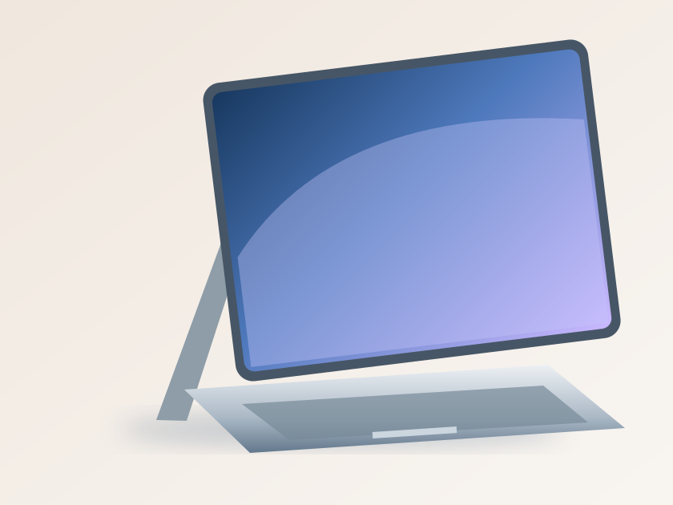
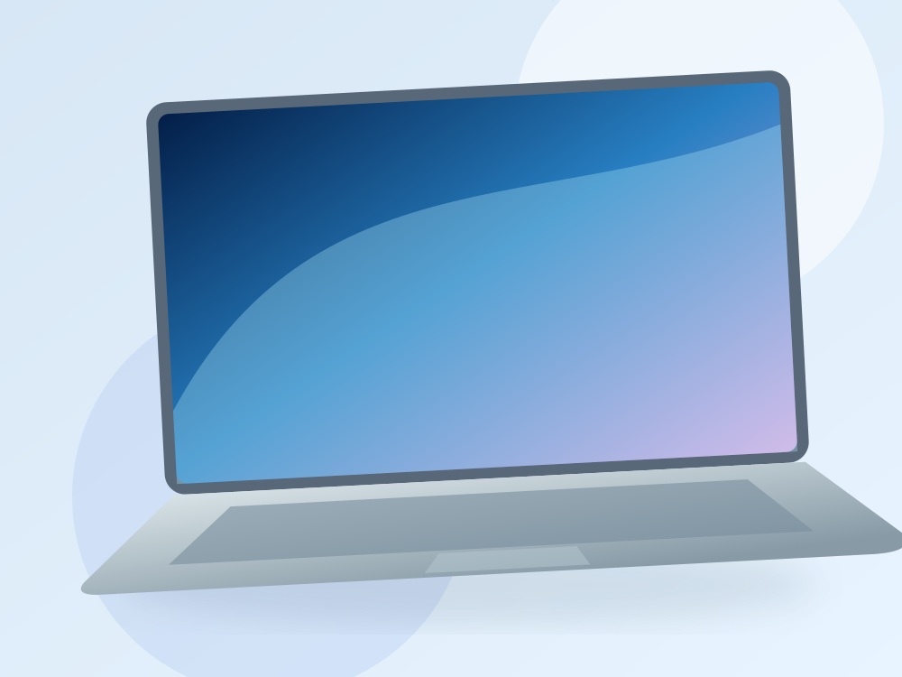
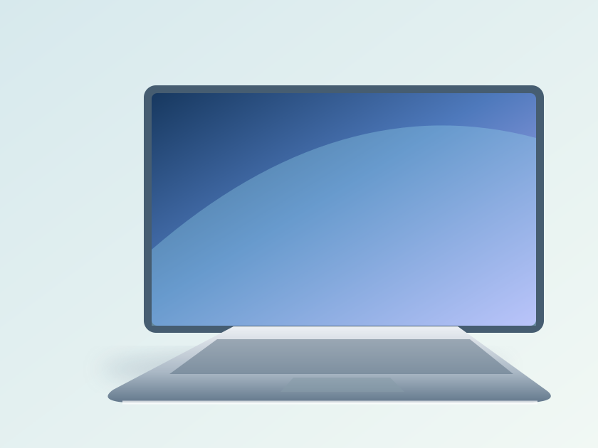
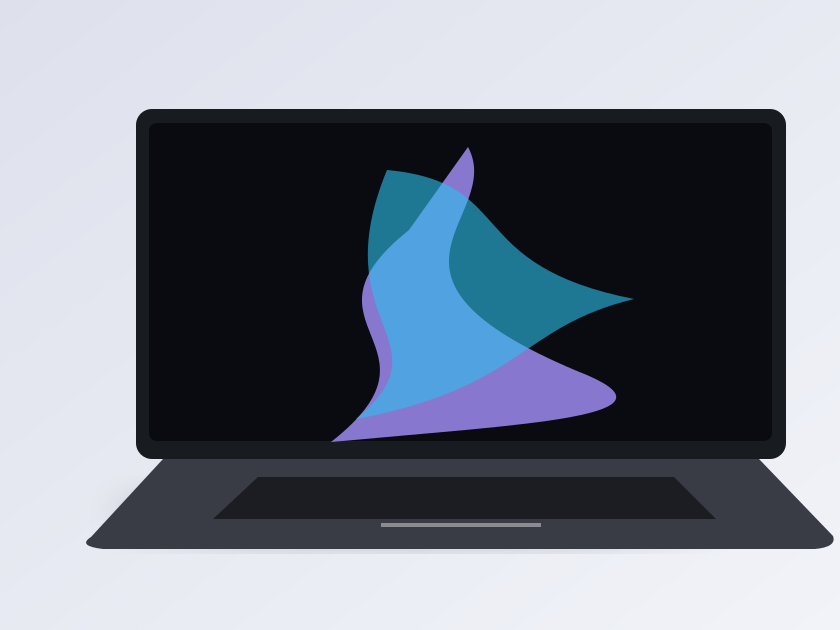
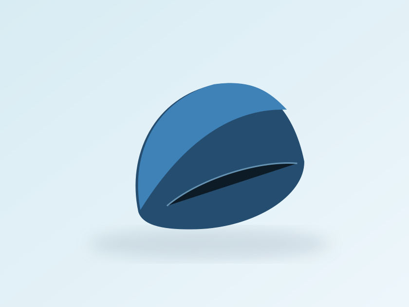

2-in-1 versatility
Surface Pro
The flexibility of a tablet, the possibility of a laptop. Create and connect wherever you go.
Explore Surface ProBeautifully built devices for wherever your next idea takes you. Work smarter, create freely and stay connected.
A Bootstrap UI recreation · Educational use only

Find your fit
Explore laptops and versatile PCs designed for the way you work and play.

The flexibility of a tablet, the possibility of a laptop. Create and connect wherever you go.
Explore Surface Pro
Light, refined, and ready for the unexpected moments that turn into something big.
Explore Surface Laptop
A bold new concept in creative performance with thoughtful, modern design.
Discover the Surface familyFrom the first sketch to the final detail, Surface is designed to help your ideas feel effortless.
Beautifully portable
Made to move with you.
Thoughtful details
Built around everyday work.
Ready to create
New ways to express ideas.
Windows experience
Familiar, versatile, connected.
Complete your setup with accessories that combine comfort, function and a little bit of personality.
View accessories ↗
A few helpful notes before exploring the range.